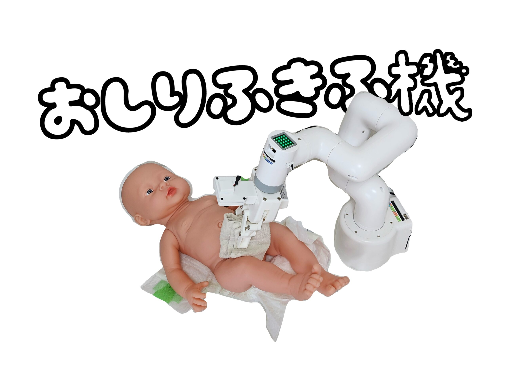
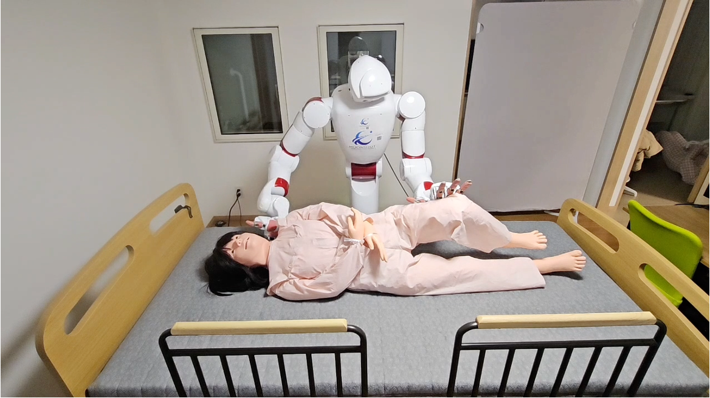
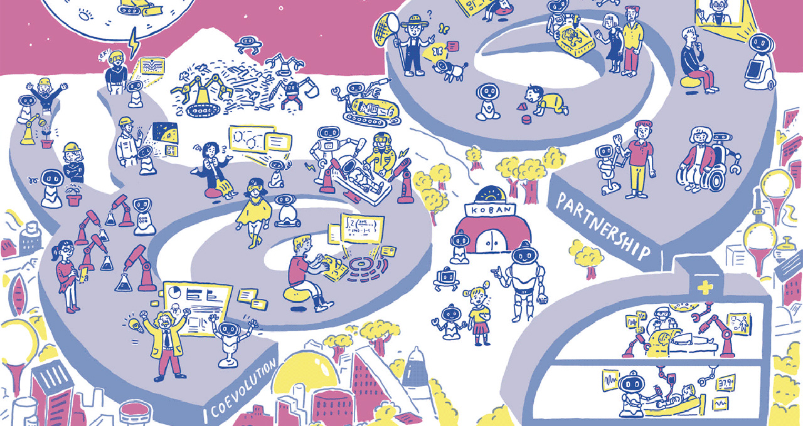
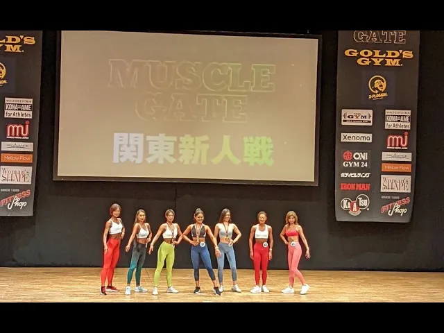
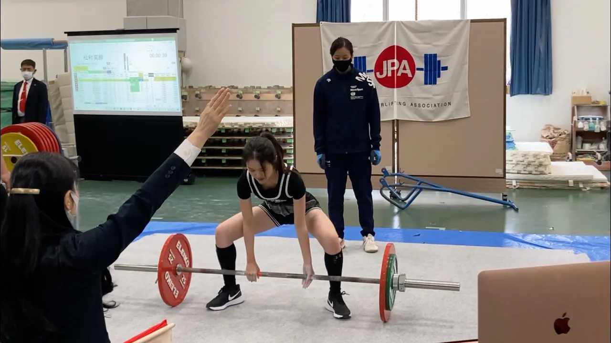
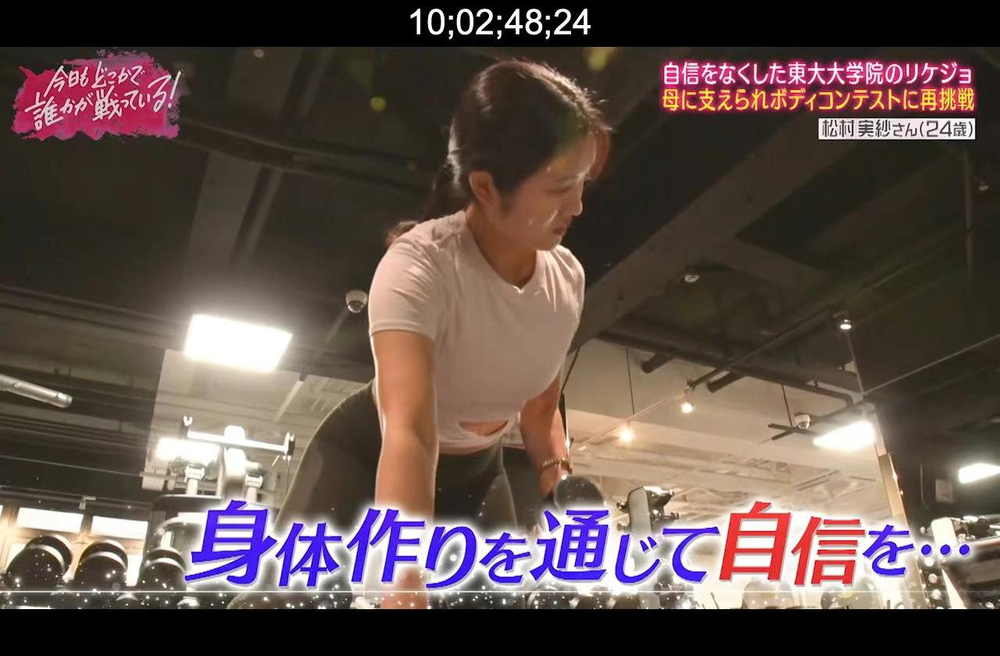
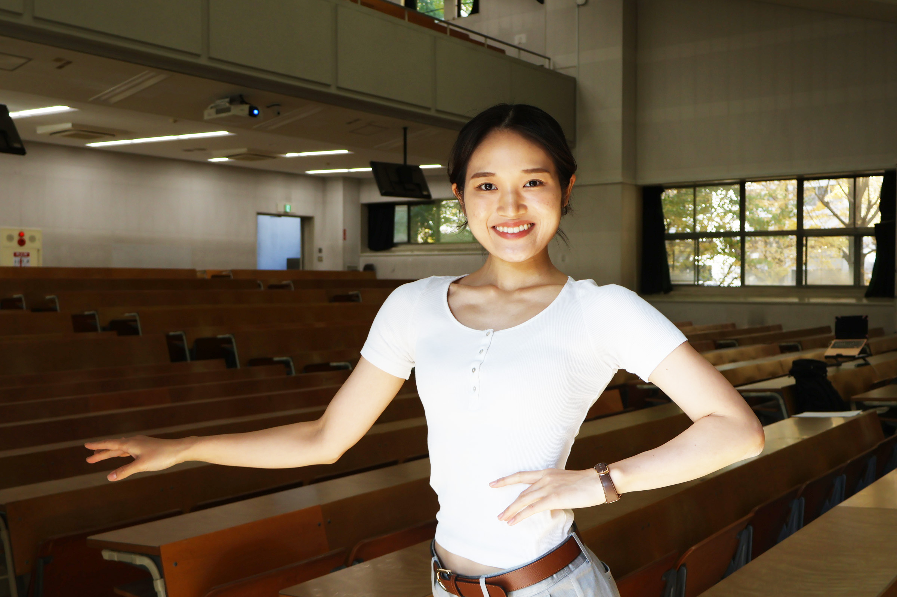

介護ロボットの研究をしています。介護の身体的・精神的負担がない社会を目指します。ロボット開発に限らず、介護のIT化や介護ロボットの普及活動に携わりたいです。
趣味で筋トレ・YouTubeをしています。
2016.4 - 2019.3 京都私立洛南高等学校
2020.4 - 2024.3 東京大学 工学部 精密工学科
2023.4 - 東京大学 医用精密工学研究室
2024.4 - 2026.3 東京大学大学院 工学系研究科 バイオエンジニアリング専攻（修士）
2026.4 - 東京大学大学院 工学系研究科 精密工学専攻（博士）







misamatesumura33@gmail.com